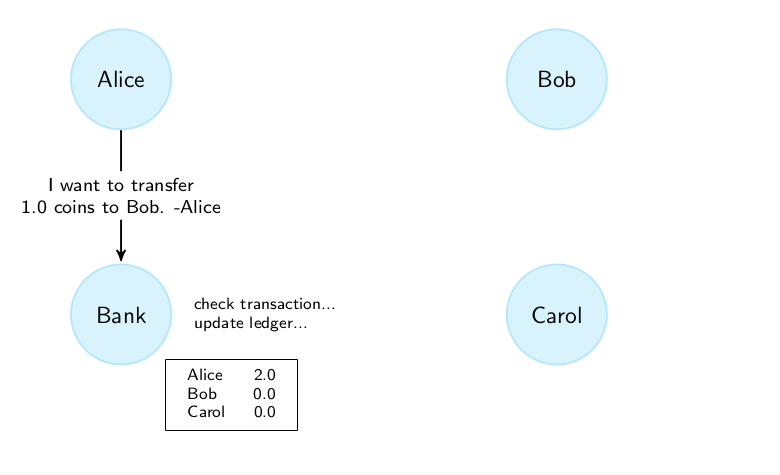
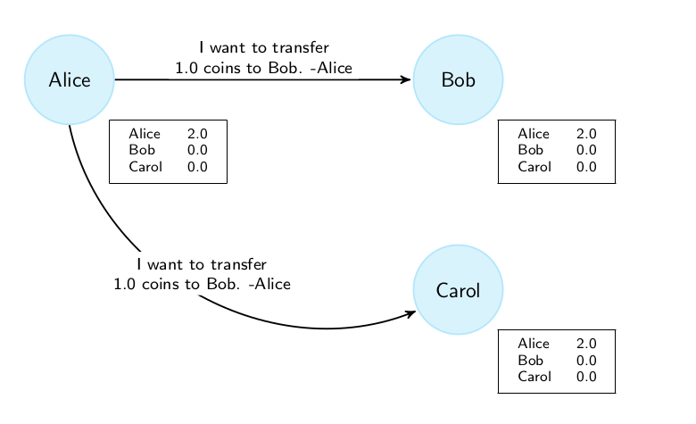
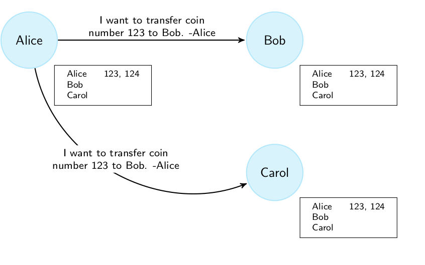
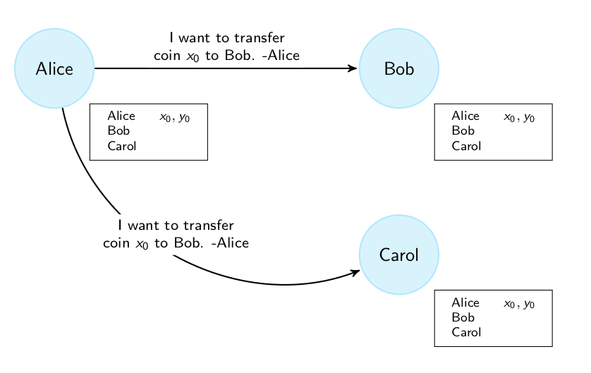
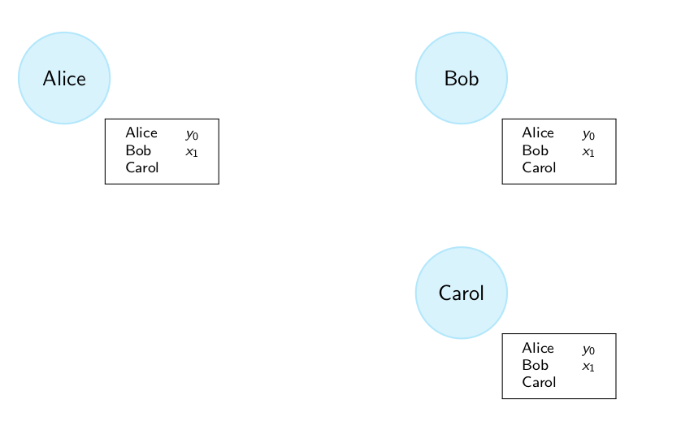
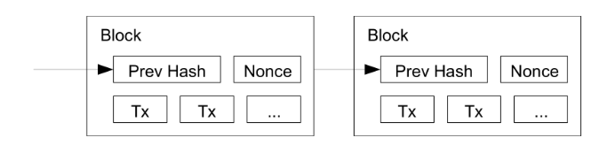

tags: cryptocurrency decentralization bankcoin naivecoin serialnumbercoin transactioncoin electioncoin proofofworkcoin blockchaincoin incentivecoin
From BankCoin to IncentiveCoin
links: DSS TOC - Decentralization - Index
Getting rid of the bank
The step from a centralized to a decentralized payment and currency system is just getting rid of the bank as trusted third party. As we learned Bitcoin is a peer to peer network, which means transactions happen directly between participants of the network and not over some intermediate party. The process of decentralization is the process of making banks unnecessary. This process comes with multiple steps.
BankCoin
The BankCoin represents the current situation where a bank has a ledger (centralized) and accepts transactions. We trust the bank to perform the transactions right and keep the ledger in good state.
Problems with the BankCoin:
- Censor transactions
- Create money

NaiveCoin
Predecessor: BankCoin
The NaiveCoin works as follows:
- Issuer of the transaction sends it to everyone in the network.
- Everyone receiving the transaction, updates their copy of the ledger.
- Having the own ledger up to date is important to validate incoming transactions
NaiveCoin solves:
- No banks involved anymore (no censure, no money creation)
Problems with the NaiveCoin:
- Replay Attacks

SerialNumberCoin
Predecessor: NaiveCoin
In order to prevent replay attacks, we add a serial number to each coin. A serial number is unique by definition and therefore no two coins in a ledger can have the same serial number. Otherwise this would be detected by the system and the transaction would be aborted. Instead of a balance, the ledger know holds a list of serial numbers attached to the account.
SerialNumberCoin solves:
- It makes the Replay Attack more specific (but does not resolve it)
Problems with the SerialNumberCoin:
- Replay Attack (Assume, somehow the initially spent coin reaches the wallet of Alice again. Bob can now replay the initial transaction, which will give him the coin of Alice again)

TransactionCoin
Predecessor: SerialNumberCoin
Now the ledger does not store the serial number of the coin anymore, but instead saves the transaction which transferred the coin. So the coin is represented by the transaction which made the coin to occur in the wallet.
TransactionCoin solves:
- Replay Attacks: The specific replay attack if a coin comes back to its initial owner.
Problems with the TransactionCoin:
- Double Spending Attack

This image only illustrates the process of the transaction being emitted on the network to all participants. The next image shows how the ledgers look after the transaction was processed.

You could denote = “Alice owns 1 coin”, which will then become = “Alice sends to Bob” = “Alice sends (Alice owns 1 coin) to Bob” through the transaction. Chaining arbitrary amount of transactions like this makes it obvious, that even if a coin gets back to its originator, the representation (value) will not be the same and therefore the replay attack cannot be done anymore.
PublicAnnouncementCoin
What is a public announcement
I have the message The exam is next friday.
Are the following ways of announcing it public announcements?
- I send it to all of you as an email.
- No, not cryptographic security
- I put it on a public web server that you all know about.
- No, the webserver can respond differently to the requests
- I say it in class (everyone hears the announcement and knows that everyone else has heard it too)
- Yes
PublicAnnouncementCoin
Predecessor: TransactionCoin
The PublicAnnouncementCoin resolves the double spending attack by introducing a public announcement which means that each node only accepts transactions which were publicly announced. Like this Alice can no longer send the same transaction with different receivers to the network.
PublicAnnouncementCoin solves:
- Double Spending Attack
Problems with the PublicAnnouncementCoin:
- How can we publicly announce something on the internet?
ElectionCoin
Predecessor: TransactionCoin
The election coin does not write transaction immediately if they arrive but creates a transaction pool of so called unconfirmed transactions. Participants of the network periodically randomly elect a leader among themselves. The leader then broadcasts his transaction pool which is then taken as new transaction pool by all other participants.
ElectionCoin solves:
- if leader is honest, ElectionCoin prevents double spending attack.
Problems with the ElectionCoin:
- How to randomly select a leader?
- Sybil Attack (Take over a network by creating a lot of identities on the respective network)
ProofOfWorkCoin
Predecessor: ElectionCoin
ProofOfWorkCoin implements a leader election algorithm leveraging a proof of work scheme allowing leader election building on the ElectionCoin. Therefore all nodes solve a puzzle and the first node to solve the puzzle becomes the new leader. Additionally each node given the new transaction pool, will first verify the solution given by the leader.
ProofOfWorkCoin solves:
- Leader Election
- Sybil attack is hard (Assuming every node has the same computing power and that the majority of the nodes are independent, taking over the network by a sybil attack is hard)
Problems with the ProofOfWorkCoin:
- Two nodes find the solution at the same time
BlockchainCoin
Predecessor: ProofOfWorkCoin
The BlockchainCoin works like the ProofOfWorkCoin but instead of the transaction pool broadcasts a block which contains:
- the transaction pool
- a nonce
- the hash of the previous block.
Additionally, each node:
- stores all block (not a ledger)
- builds on the longest available and valid chain
The stored blocks form a tree, where each block is linked to the previous block.
The above leads to following Proof-of-Work (PoW):
The difficulty consists in the number of leading zeros in the result of the hash calculation, which takes the hash of the previous block, the transaction and a nonce as input. The nonce is the solution of the puzzle.
BlockchainCoin solves:
- Two nodes finding solution to puzzle at the same time Consistency through Eventual Consistency
- Double Spending attacks are highly unlikely (broadcast of a transaction in a block, send same coin to ourself and find new blocks with the new transaction and be the new longest chain and thus invalidate the first transaction)
Problems with the BlockchainCoin:
- 51% attack: It’s too easy to control half of the network

IncentiveCoin
Predecessor: BlockchainCoin
The IncentiveCoin adds incentivation to the blockchain, by adding a coinbase transaction which creates new coins. These coins are also called block reward. It’s the only way of creating new money in the system. The block reward decreases over time which means that in 2140, the last bitcoin will be rewarded. Now we have the problem, that the reserve of coins is limited (limit is 21 million). Therefore a transaction fee can be attached to a transaction. In addition to the block reward, the coinbase transaction is allowed to pay out also the coins contained in the transaction fees. The block reward halves every 210’000 blocks (every four years). The block size limit of 1 MB
IncentiveCoin solves:
- 51% attack is hard
- even if block reward is no longer available, nodes are incentivized to participate in the network due to the transaction fees which they can gather.
Problems with the IncentiveCoin:
- Computational power of the network changes (typically increases) shorter Inter-block Time = higher probability for forks
links: DSS TOC - Decentralization - Index